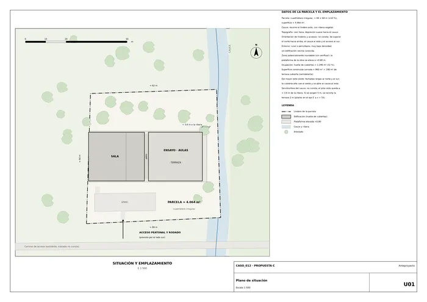
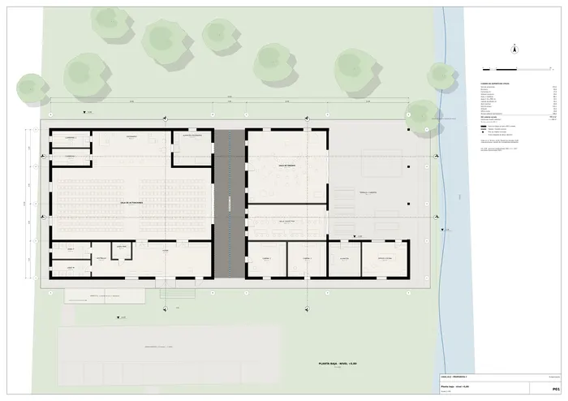
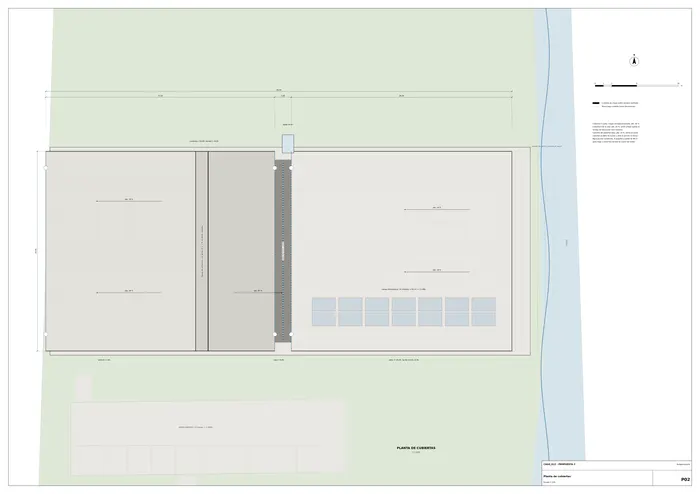
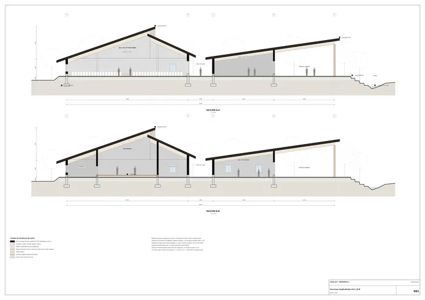
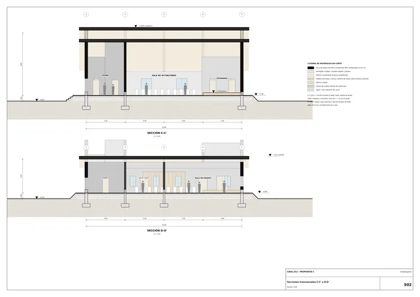
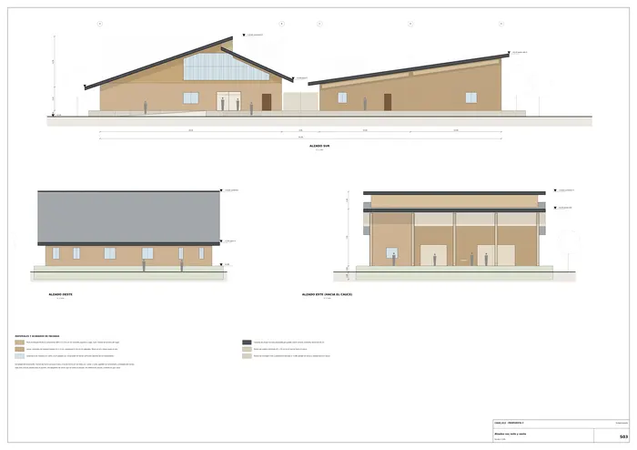
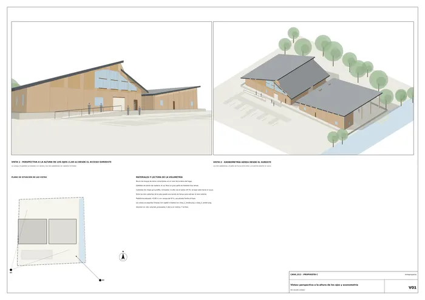
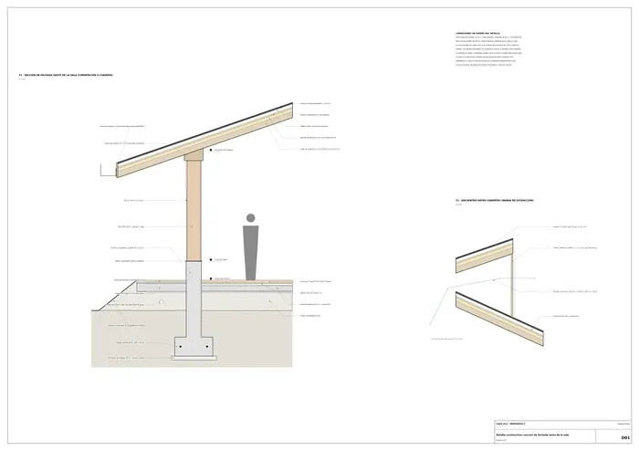

Caso 012 · Colectivo C733 · 2021 · equipamiento social (centro comunitario / casa de la música)
Dos pabellones de cubierta inclinada, separados por un patio de lluvia y alineados en el eje este-oeste. El pabellón alto, al oeste, es la sala de actuaciones (la pieza pesada, cerrada, acústica). El pabellón bajo, al este, aloja el ensayo y la enseñanza y se abre en un porche cubierto hacia el cauce (la pieza ligera, que mira al paisaje). Todo se levanta sobre una plataforma de +0,80 m por la posible inundación. Las cubiertas se leen como en el boceto: la alta cae al oeste y la baja sube hacia el agua. Entre las dos cubiertas de la sala queda una banda de lamas que extrae el aire caliente.
Dos lecturas del boceto.
| 1. Dos pabellones + patio (elegido) | 2. «Aldea sonora»: sala + 8 celdas dispersas (cuestiona que el programa sea un solo edificio) | 3. Bloque compacto de 2 plantas sobre pilotis | |
|---|---|---|---|
| Programa | Todo en una planta; sala de 254 m² | Celdas de 20 m² en pilotes, servicios duplicados | Ensayo sobre la sala |
| Clima | Ventilación cruzada, tiro térmico, aleros de 2 m | Bien ventilado; pasarela cubierta (ajuste) para la lluvia | Poca superficie de fachada; difícil ventilar |
| Vistas al cauce | Porche de 12 × 16,5 m abierto al este | Cada celda mira al agua | Solo la planta alta |
| Accesos | Rampa del 8 % y un único nivel | Pasarela de 60 m | Ascensor y 2 escaleras (ajuste) |
| Normativa / riesgo | Una plataforma, pocos apoyos | 8 cimentaciones en zona inundable | Forjado acústico pesado sobre la sala |
| Resultado | Elegido: la sala (la parte más pesada) queda en el suelo y todo es accesible sin ascensor | Descartado tras el ajuste: sigue habiendo 8 cimentaciones y servicios duplicados | Descartado tras el ajuste: el ensayo sobre la sala sigue exigiendo un forjado de masa alta y las 2 plantas ocultan el cauce desde el acceso |
| A. Piel de lamas sobre vidrio (muro cortina ligero) | B. Masa de tierra con huecos puntuales (elegida) | |
|---|---|---|
| Hueco / macizo | ≈ 70 % de vidrio | ≈ 12 % de huecos en las fachadas largas; un paño acristalado solo en el gablete sur |
| Material y profundidad | Perfil de aluminio y lamas, 15 cm | Bloque de tierra comprimida (BTC), muro de 40 cm; aleros de 2 m |
| Clima Am (40 °C, > 1.800 mm de lluvia) | Gana mucho sol en poniente; la lluvia en diagonal moja el vidrio | La inercia retrasa el calor; el alero protege el muro |
| Contexto | Rural y sin vecinos: no pide una piel urbana | Usa la tierra del lugar y un oficio local |
El gablete sur lleva vidrio detrás de lamas porque el sol del sur es bajo solo en la estación fresca y el foyer, de doble altura, necesita luz. Un hueco en un paño no basta: en ese frente el vidrio ilumina todo el foyer y las lamas filtran el sol.
Se llega por el sur, desde el aparcamiento (10 plazas + 1 PMR), por una rampa y una escalinata hasta el foyer (72 m²). Del foyer se pasa a la sala de actuaciones (253,6 m², unas 360 sillas, escenario de 60,8 m² con tarima a +1,20, camerinos y almacén). Un patio de lluvia (5 × 22 m, grava y canal) separa los dos pabellones. Al otro lado están las cabinas de estudio, el aula colectiva, la sala de ensayo, el almacén, el office y el porche de 198 m² con plegables de lamas hacia el cauce. Al este hay gradas de tierra y césped hasta la ribera.
| Exigido | Propuesto | Cumple / desviación |
|---|---|---|
| Plantas | P01 (planta baja), P02 (planta cubiertas) | Cumple |
| Secciones | S01 (secciones longitudinales) (A-A', B-B'), S02 (secciones transversales) (C-C', D-D') | Cumple |
| Alzados | S03 (alzado sur este) (sur, este y oeste) | Cumple |
| Detalle constructivo | D01 (seccion constructiva) (1:20) | Cumple |
| Espacio de actuaciones y reunión | Sala 253,6 + escenario 60,8 + foyer 72,0 + vestíbulo 14,0 | Cumple (1 sala) |
| Ensayo / enseñanza | 2 cabinas de 29,6 m²; 1 aula colectiva de 60,8; 1 sala de ensayo de 125,2 | Cumple (4 unidades de 3 tipos) |
| Servicios y apoyo | Aseo F 14,0; aseo M 14,0; aseo PMR 6,6; almacén 24,4; almacén de escenario 29,6; office-cocina 34,8; 2 camerinos de 14,0 | Cumple |
| Espacios exteriores | Porche 198 m²; patio de lluvia 110 m²; gradas al cauce; aparcamiento 10 + 1 PMR | Cumple |
| Superficie 800-1.800 m² | Útil cerrada 797,2; construida cerrada ≈ 858; con el 50 % del porche ≈ 957; huella de cubiertas 1.296 | Cumple en superficie construida. Desviación mínima: la útil cerrada queda 3 m² bajo 800; con el porche pasa de 995 |
| Normativa: no consta; posible zona inundable | Plataforma a +0,80 m (cota provisional) | Desviación abierta: falta el estudio hidrológico |
| Vistas al cauce y arbolado | Porche abierto al este; ventanas al arbolado | Cumple |
| Cauce: servidumbre sin verificar | El pilar este queda a ≈ 3,6 m de la ribera | Desviación posible: si se exigen 5 m, se recorta 2 m del porche (pilares a x = 54) |
| Edificación existente | No hay | No procede |
Los ejes largos van de este a oeste, con las fachadas largas al norte y al sur. Los huecos al oeste son pequeños. Hay ventilación cruzada entre el patio y el porche. El aire caliente sale por la banda de lamas de 1,70 m entre las cubiertas. Los aleros de 2 m protegen los muros de la lluvia. Las cubiertas ligeras y ventiladas y los muros de masa retrasan el calor. La plataforma elevada y el drenaje perimetral protegen de la humedad y de las crecidas. El patio de lluvia evapora el agua y refresca el aire.
Todo está en un solo nivel. La rampa del 8 % salva 0,80 m en dos tramos de 5 m con un descanso de 2 m y 2,30 m de ancho. El aseo PMR mide 6,6 m² y hay una plaza PMR. La sala sale por dos puertas dobles de 1,8 m al foyer (que da al exterior por una puerta doble de 3,0 m y otra de 1,2 m), por el plegable de 6,0 m al patio y por la puerta doble de 1,6 m del almacén de escenario. Ningún recorrido supera los 25 m hasta el exterior. La sala de ensayo sale al porche por un plegable de 5,0 m y al oeste por una puerta de 1,2 m.

U01 · Plano de situación
P01 · Planta baja · nivel +0,80
P02 · Planta de cubiertas
S01 · Secciones longitudinales A-A' y B-B'
S02 · Secciones transversales C-C' y D-D'
S03 · Alzados sur, este y oeste
V01 · Vistas: perspectiva a la altura de los ojos y axonometría
D01 · Detalle constructivo: sección de fachada oeste de la salaMemoria de la propuesta tal como la entregó el sistema. Se han omitido las notas internas del proceso (revisiones, control de reconocimiento y referencias a archivos de trabajo).